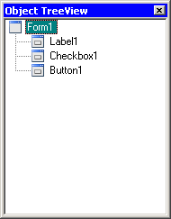

|
This window show hierarchy of all objects on the form being edit. You can switch between the objects - when selecting tree item, corresponding control is selecting as well. Control context menu is available here too. You also can select multiple objects with pressed Ctrl key. Also you can rename object. This name is description only and will not generated. For did this perform “slow” doubleclick on the object or press F2. When you clean edit field, name revert to dafault one (control name). |
 |